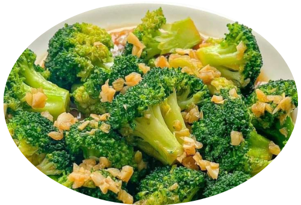
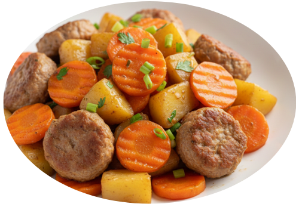

Olahan Sayur

Tumis Buncis
manis gurih saus tiram
♡
Sayur Bayam Jagung
segar dan bergizi
♡
Sawi Bakso
gurih dan praktis
♡

Tumis Kangkung
sederhana dan lezat
♡
Tumis Kacang Panjang
gurih dan sederhana
♡

Tumis Brokoli
gurih dan sehat
♡

Tumis Wortel Kentang
sederhana dan mengenyangkan
♡